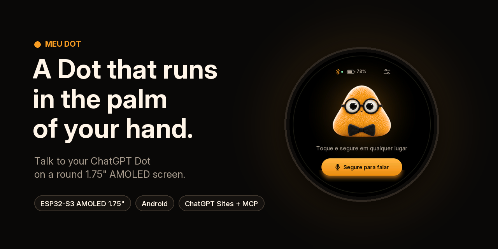

Web installer · Instalador
Flash the board from Chrome or Edge. · Grave a placa pelo Chrome ou Edge.
Simulator · Simulador
Try the round screen in your browser. · Experimente a tela redonda no navegador.
Getting started
Step-by-step guide in English.
Primeiros passos
Guia passo a passo em português.